| 类型 | 规律 |
|---|---|
| 酸性 (pKa) | RCOOH ≈ 3~5 ＞ 碳酸 (6.4) ＞ 苯酚 (10) ＞ 醇 (16)；羧酸能放 CO₂，酚不能 |
| 取代基 → 酸性 | 吸电子基 (−Cl/−NO₂/−CF₃) 增酸；供电子基 (−CH₃) 减酸；诱导效应随距离衰减 |
| 羧酸 → 酰氯 | SOCl₂（最常用，副产物 SO₂↑/HCl↑ 全是气体）；PCl₅ / PCl₃ |
| 羧酸 → 酯 | Fischer 酯化：RCOOH + R'OH ⇌(H⁺) 酯 + H₂O（可逆，断的是酰基 C—OH） |
| 羧酸 → 酸酐 | P₂O₅ / 加热脱水；二元酸 (4C/5C) 受热自动成环酐 |
| 还原 | LiAlH₄ → 1° 醇（强）；NaBH₄ 不还原羧酸；H₂/催化也不行 |
| α-卤代 (HVZ) | Br₂ / 少量 P → α-溴代酸（经酰溴的烯醇） |
| 脱羧 | β-位有 C=O 或 COOH（β-酮酸 / 丙二酸）→ 受热经六元环 TS 脱 CO₂ |
| 二元酸受热 | 2,3 C 脱羧；4,5 C 脱水成环酐；6,7 C 同时脱水脱羧成环酮 |
| 鉴别 | NaHCO₃ 放 CO₂ 气泡（=羧酸，区别于酚）；甲酸/草酸还能使 KMnO₄ 褪色；甲酸有银镜 |
| 反应 | 动哪里 | 跳转 |
|---|---|---|
| 命名 | — | 12.1 命名 |
| 酸性 + 取代基效应（排序） | O—H | 12.2 酸性 |
| 成盐 (NaOH/NaHCO₃) | O—H | 12.3 成盐 |
| Fischer 酯化（机理 + ¹⁸O 示踪） | 羰基 C / C—OH | 12.4 酯化 |
| 成酰氯 (SOCl₂)（机理） | C—OH | 12.5 成酰氯 |
| 成酸酐（脱水） | C—OH | 12.6 成酸酐 |
| 还原 (LiAlH₄) | 羰基 C | 12.7 还原 |
| 脱羧（六元环 TS） | —COOH 整体 | 12.8 脱羧 |
| α-卤代 (HVZ)（机理） | α-H | 12.9 HVZ |
| 二元酸受热规律 | 看碳数 | 12.10 二元酸受热 |
| 鉴别方法 | — | 12.11 鉴别 |
| 合成应用 / 易错 | — | 12.12 合成 · 考前提醒 |
| 结构 | 系统名 | 俗名 |
|---|---|---|
| HCOOH | 甲酸 | 蚁酸 (formic) |
| CH₃COOH | 乙酸 | 醋酸 (acetic) |
| HOOC—COOH | 乙二酸 | 草酸 (oxalic) |
| HOOC—CH₂—COOH | 丙二酸 | 缩苹果酸 (malonic) |
| HOOC—(CH₂)₂—COOH | 丁二酸 | 琥珀酸 (succinic) |
| HOOC—(CH₂)₄—COOH | 己二酸 | adipic (尼龙-66 原料) |
| C₆H₅COOH | 苯甲酸 | 安息香酸 (benzoic) |
| 邻-HOOC-C₆H₄-COOH | 苯-1,2-二甲酸 | 邻苯二甲酸 (phthalic) |
关键在共轭碱 (RCOO⁻) 的稳定性：羧酸根负电荷平均分摊在两个等价的 O 上（两个 C—O 键完全等长，是真正的离域，不是单纯的诱导）→ 极稳定 → 容易电离。
酸性：羧酸 (pKa 3~5) ＞ 碳酸 (6.4) ＞ 苯酚 (10) ＞ H₂O (15.7) ＞ 醇 (16)
| 酸 | pKa | 说明 |
|---|---|---|
| CF₃COOH | 0.2 | 三个 F 强吸电子，酸性极强 |
| CCl₃COOH | 0.7 | 三氯，强吸电子 |
| Cl₂CHCOOH | 1.3 | 二氯 |
| ClCH₂COOH | 2.9 | 一氯（−I 吸电子） |
| HCOOH | 3.8 | 甲酸（无烷基供电） |
| CH₃COOH | 4.8 | 参考值 |
| CH₃CH₂COOH | 4.9 | 乙基弱供电 |
| (CH₃)₃CCOOH | 5.0 | 叔丁基供电，酸性最弱 |
三条子规律：
分析：都靠 α-位卤素的 −I 吸电子稳定共轭碱。
答案：③ > ④ > ② > ①
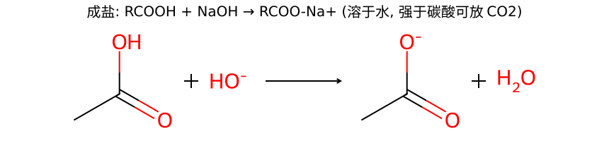
因为羧酸 (pKa 3~5) 比碳酸 (6.4) 还强，所以连弱碱 NaHCO₃ 都能反应并放出 CO₂：
RCOOH + NaHCO₃ → RCOO⁻Na⁺ + H₂O + CO₂↑
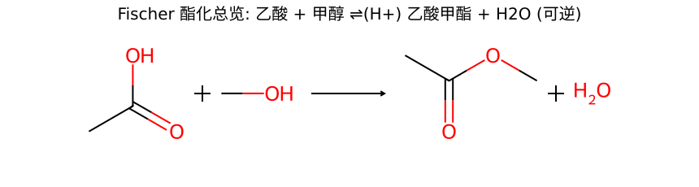
RCOOH + R'OH ⇌(H⁺催化) RCOOR' + H₂O
这是可逆反应（逆反应 = 酯的酸性水解）。要提高产率：过量一种反应物，或除去生成的水（分水器 / 浓硫酸吸水），把平衡向右拉。
核心是羰基 C 上的亲核加成 → 四面体中间体 → 消除。这套"加成-消除"机理是所有羧酸及衍生物在酰基上取代的通用骨架，务必吃透。
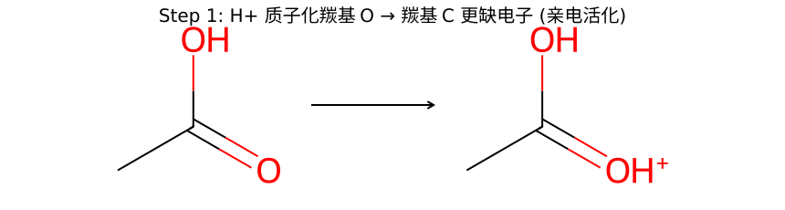
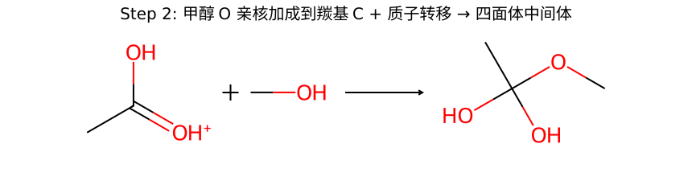
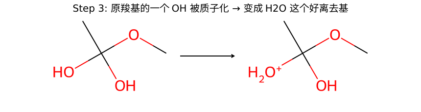
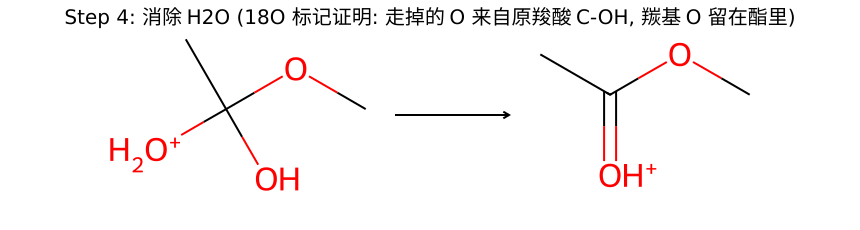
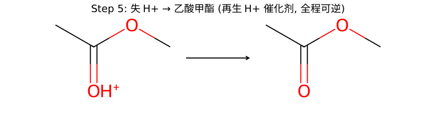
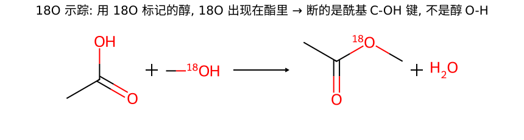
实验设计：用 ¹⁸O 标记的醇 R'—¹⁸OH 去做酯化。结果发现：
结论：醇的 O 完整地进了酯，走掉的水里的 O 来自羧酸。说明断键发生在 羧酸的"酰基 C—OH"那根键（羧酸失 OH、醇失 H），不是醇的 O—R' 键，也不是醇的 O—H 单独断。
R—C(=O)—|OH + H—|¹⁸O—R' → R—C(=O)—¹⁸O—R' + H₂O
（竖线 | 标出真正断的键：羧酸的 C—OH 与醇的 O—H）
羧酸本身的 —OH 是很差的离去基，直接做酰基取代（成酯/酰胺）很慢。把 —OH 换成 —Cl（酰氯是活性最高的羧酸衍生物），后续与醇/胺/羧酸盐反应就轻而易举。酰氯是"活化羧酸"的标准手段。
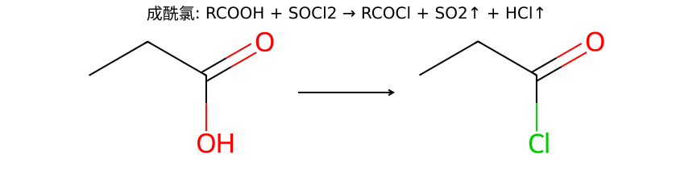
RCOOH + SOCl₂ → RCOCl + SO₂↑ + HCl↑
SOCl₂（氯化亚砜）最常用，因为副产物 SO₂ 和 HCl 都是气体，自动跑掉，产物极纯。也可用 PCl₅、PCl₃。
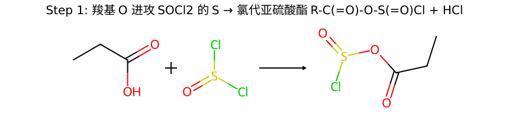
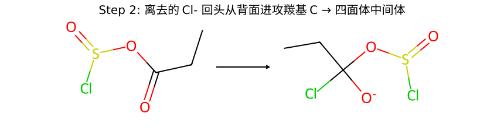
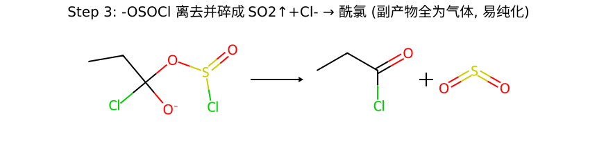
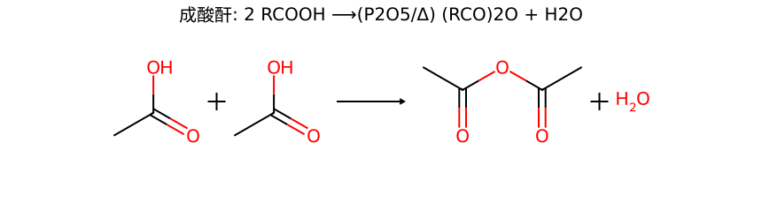
2 RCOOH ⟶(P₂O₅ 或 加热) (RCO)₂O + H₂O
用 P₂O₅（强脱水剂）或高温脱水。也可由酰氯 + 羧酸钠更干净地制备：RCOCl + RCOONa → (RCO)₂O + NaCl。
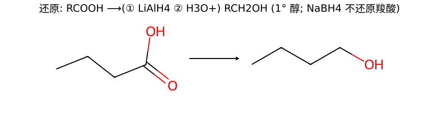
RCOOH ⟶(① LiAlH₄ / 无水醚 ② H₃O⁺) RCH₂OH
羰基被还原成 —CH₂—，得到比原碳数相同的伯醇。
| 还原剂 | 羧酸 RCOOH | 醛/酮 | C=C 双键 |
|---|---|---|---|
| LiAlH₄（强） | ✓ → 1° 醇 | ✓ → 醇 | ✗ 不动 |
| NaBH₄（温和） | ✗ 不还原 | ✓ → 醇 | ✗ 不动 |
| H₂ / 催化 | ✗（一般不还原羧酸） | ✓ | ✓ → 烷烃 |
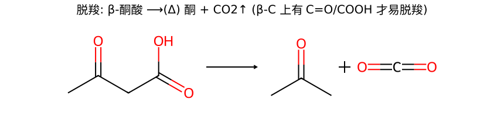
例：乙酰乙酸 (β-酮酸) 受热 → 丙酮 + CO₂↑。
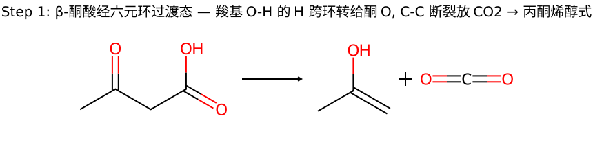
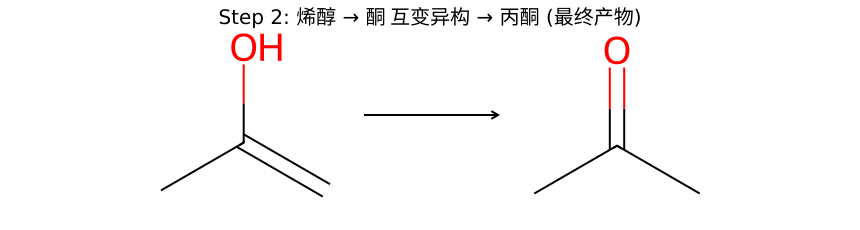
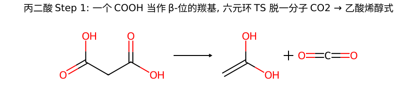
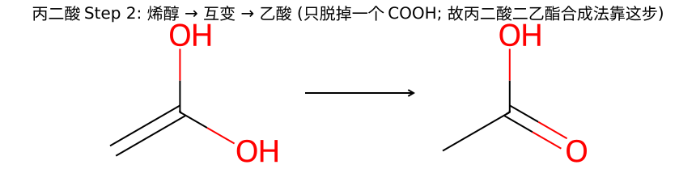
丙二酸 HOOC—CH₂—COOH 受热时，一个 COOH 的 C=O 充当"β-位羰基"，同样走六元环过渡态脱掉一分子 CO₂，给出乙酸（先以烯醇式出现，再互变）。
只脱一个 CO₂：脱完一个后变成普通羧酸（乙酸），β-位不再有羰基，就脱不动了。
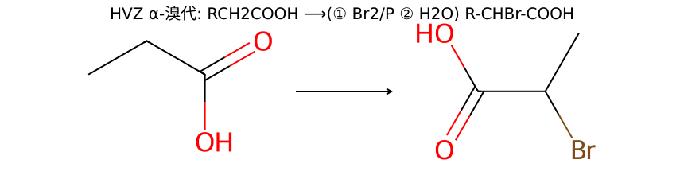
RCH₂COOH ⟶(① Br₂ / 少量 P ② H₂O) R—CHBr—COOH
只换α-位的 H（与羧基相连那个 C 上的 H）。产物 α-溴酸是合成 α-氨基酸、α-羟基酸的重要中间体。
核心难点：羧酸本身很难烯醇化（α-H 不够活泼），直接溴代行不通。HVZ 的妙处是 P + Br₂ 先把羧酸转成酰溴，酰溴的 α-H 活泼得多、容易烯醇化，烯醇再去抓 Br₂。
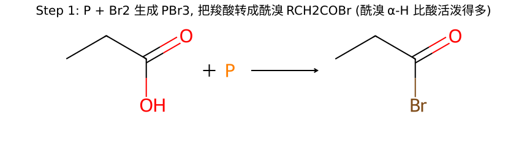
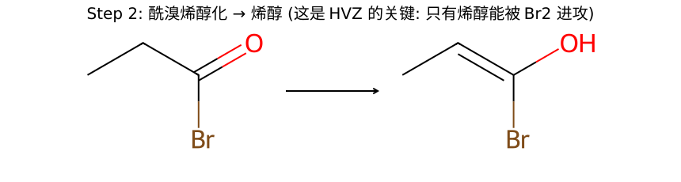
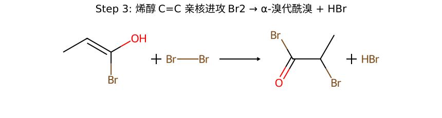
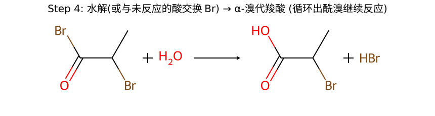
| 二元酸（总碳数） | 受热产物 | 原因 |
|---|---|---|
| 乙二酸 草酸 (C2) 丙二酸 (C3) | 脱羧（失 CO₂） | 两羧基太近，成环张力大；直接脱羧得一元酸/甲酸 |
| 丁二酸 琥珀酸 (C4) 戊二酸 (C5) | 分子内脱水 → 五/六元环酐 | 能形成无张力的 5 元 / 6 元环酐（最稳） |
| 己二酸 (C6) 庚二酸 (C7) | 脱水 + 脱羧 → 环酮（Ba(OH)₂/Δ） | 成环酐要 7/8 元环（张力大不利），改走脱羧成 5/6 元环酮 |
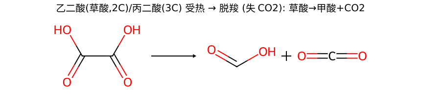
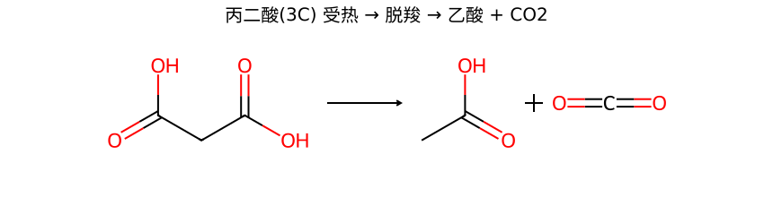
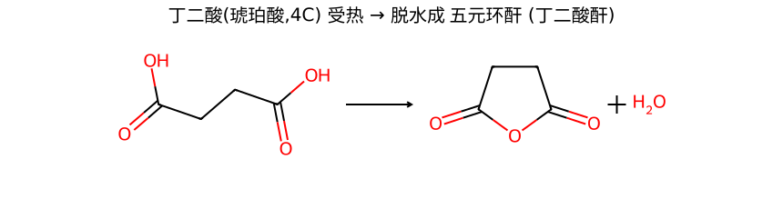
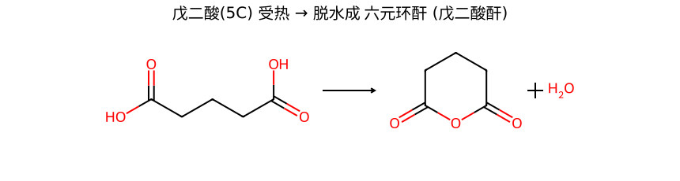
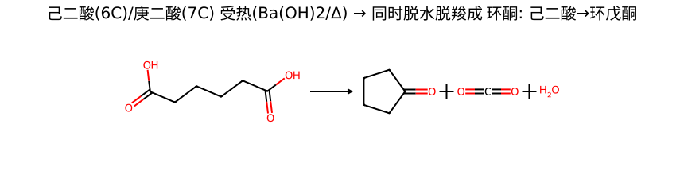
己二酸 HOOC—(CH₂)₄—COOH + Ba(OH)₂，加热 → 环戊酮 + CO₂↑ + H₂O。
这是工业/合成上由开链二元酸造五元环酮的经典法。若要环己酮，则用庚二酸 (C7)。
| 试剂 | 鉴别对象 | 现象 |
|---|---|---|
| NaHCO₃ | 羧酸 vs 酚 / 醇 | 羧酸放 CO₂ 气泡；酚、醇不放 |
| 石蕊 / pH 试纸 | 羧酸（明显酸性） | 变红（比酚明显） |
| Tollens (银氨) | 甲酸 HCOOH（特例） | 甲酸有 —CHO 结构片段 → 银镜（其他羧酸阴性） |
| KMnO₄ | 甲酸 / 草酸 | 使紫色 KMnO₄ 褪色（被氧化成 CO₂） |
| FeCl₃ | 区分羧酸 vs 酚 | 酚显紫色；羧酸不显（反向佐证） |
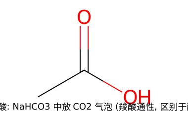
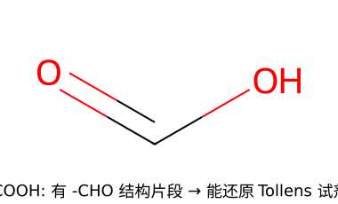
| 方法 | 反应 | 特点 |
|---|---|---|
| 1° 醇 / 醛 强氧化 | RCH₂OH 或 RCHO ⟶ K₂Cr₂O₇/H₂SO₄ 或 KMnO₄ → RCOOH | 碳数不变（第10章） |
| 烷基苯侧链氧化 | Ar—R ⟶ KMnO₄/Δ → Ar—COOH | 侧链不管多长都断成 —COOH（需 α-H） |
| Grignard + CO₂ | RMgX + CO₂ → RCOO⁻ ⟶ H₃O⁺ → RCOOH | 增 1 个碳（重要增碳法） |
| 腈水解 | RCN + H₂O/H⁺(或 OH⁻) → RCOOH | 也增 1 碳（RX + NaCN → RCN → 酸） |
| 丙二酸酯法 | CH₂(COOEt)₂ → 烷基化 → 水解 → 脱羧 | 造取代乙酸 RCH₂COOH |
活性：酰氯 ＞ 酸酐 ＞ 酯 ＞ 酰胺 ＞ 羧酸根
只能由活泼 → 不活泼（顺着箭头走）：
路线：(CH₃)₃C—Br ⟶(Mg/无水醚) (CH₃)₃C—MgBr ⟶(CO₂) ⟶(H₃O⁺) (CH₃)₃C—COOH
关键：Grignard + CO₂ 增 1 个碳。叔卤代不能走腈水解（SN2 受阻、易消除），所以用 Grignard 路线。
目标 丁酸 CH₃CH₂CH₂COOH = 乙酸 α-位接一个乙基 → 用丙二酸酯法：
收尾的脱羧正是本章 12.8 的机理。
ClCH₂COOH > ClCH₂CH₂COOH > CH₃COOH
Cl 的 −I 吸电子稳定共轭碱 → 增酸；但诱导效应随距离衰减，Cl 离羧基越远越没用。CH₃ 无吸电子基，最弱。
→ 详见 12.2 酸性
¹⁸O 跑到酯里（生成的水是普通 ¹⁶O）。说明断的是羧酸的"酰基 C—OH"键（羧酸出 OH、醇出 H），不是醇的 C—O 键。
这推翻了"羧酸出 H、醇出 OH"的直觉假设。
→ 详见 12.4 酯化
用 SOCl₂（氯化亚砜）。CH₃CH₂COOH + SOCl₂ → CH₃CH₂COCl + SO₂↑ + HCl↑。
比 PCl₅ 好在：副产物 SO₂、HCl 都是气体自动跑掉，产物极纯，无需分离磷的副产物。
→ 详见 12.5 成酰氯
不能！NaBH₄ 太温和，不还原羧酸（只还原醛酮）。
要用 LiAlH₄（强还原剂）：RCOOH ⟶① LiAlH₄ ② H₃O⁺ → RCH₂OH。注意两者都不动孤立 C=C 双键。
→ 详见 12.7 还原
产物 = 丙酮 + CO₂↑。
关键：六元环过渡态——羧基 O—H 的 H 跨环转给 β-位羰基 O，同时 C—C 断裂放 CO₂，先得烯醇，再互变成丙酮。
能脱羧的前提：β-位有羰基（C=O 或 COOH）。
→ 详见 12.8 脱羧
P + Br₂ → PBr₃，作用是把羧酸转成酰溴 RCH₂COBr。
因为羧酸的 α-H 太钝、几乎不烯醇化，直接溴代不行；而酰溴 α-H 活泼、易烯醇化，烯醇才能去抓 Br₂。最后水解回 α-溴酸，P 只需催化量（靠 Br 交换循环）。
→ 详见 12.9 HVZ
丁二酸 (C4) → 丁二酸酐（五元环酐），分子内脱水。
己二酸 (C6) + Ba(OH)₂/Δ → 环戊酮 + CO₂ + H₂O，同时脱水脱羧。
原则："二三脱羧，四五成酐，六七成酮"——都趋向无张力的 5/6 元环或放稳定 CO₂。
→ 详见 12.10 二元酸受热